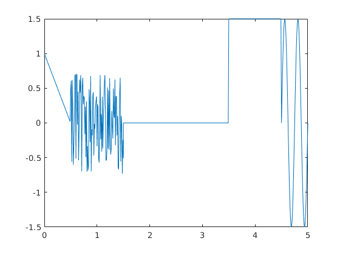

3.Labaratorijas Darbs
Contents
Signalu apstrade
%%Merki: % * Iemacities apstradat signalu un uztaisit grafiku no datiem
Darba programma:
function y = lab3(t)
if nargin == 0 t = 0:0.01:5; end %%Datu filtracija %sin t_sin_f = (t>=4.5) & (t<=5); t_sin = t(t_sin_f); %saw t_saw_f = (t>=0)&(t<0.5); t_saw = t(t_saw_f); %const t_const_f = (t>=3.5)&(t<4.5); t_const = t(t_const_f); %zero t_zero_f = (t>=1.5)&(t<3.5); t_zero=t(t_zero_f); %noise t_noise_f = (t>=0.5)&(t<=1.5); t_noise=t(t_noise_f);
sinusoida
A0=0; A= 1.5; T = (5-4.5)/2;f=1/T; delay = 1.5; y_sin=A0+A*sin(2*pi*f*(t_sin-delay)); %plot(t_sin,y_sin) %axis([xmin xmax ymin ymax]) %axis([0 5 -1.5 1.5])
Lineari mainigais signals
%k = (yA-yB)/(tA-tB); k = (1-0)/(0-0.5); delay = 0.5; y_saw = k*(t_saw-delay); %hold on %plot(t_saw,y_saw)
konstantes signals
y_const = 1.5+zeros(size(t_const));
%plot(t_const,y_const)
Nulles signal
y_zero = zeros(size(t_zero));
%plot(t_zero,y_zero)
troksna signals
y_noise = 1.5*rand(size(t_noise))-0.75;
%plot(t_noise,y_noise)
Visu signalu apvienosana
t = [t_saw,t_noise,t_zero,t_const,t_sin]; y = [y_saw,y_noise,y_zero,y_const,y_sin]; if nargout == 0 plot(t,y) y=[]; end
ans =
[]
 Secinajumi:
ir iemacits ka apstradat signalu datus un ka uztaisit grafiku no tas datiem